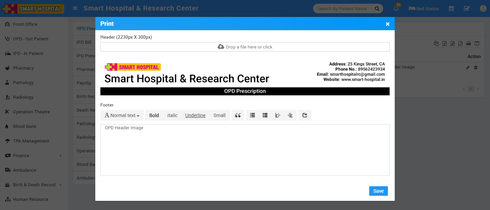
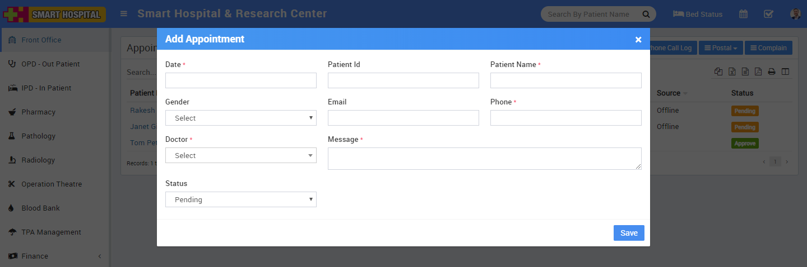
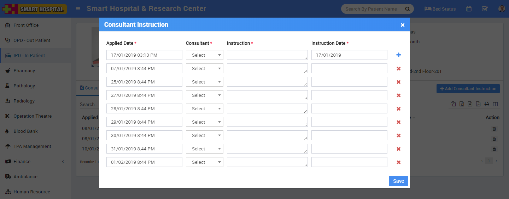
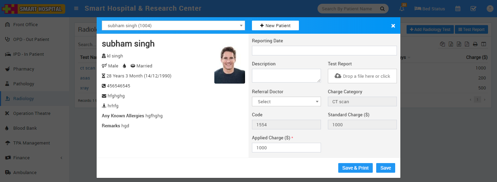
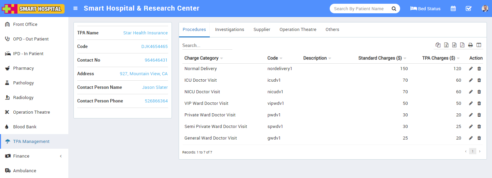
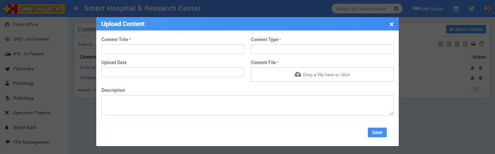
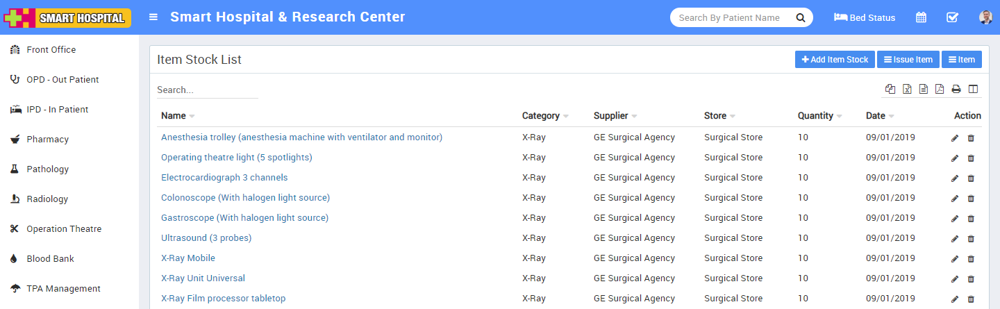
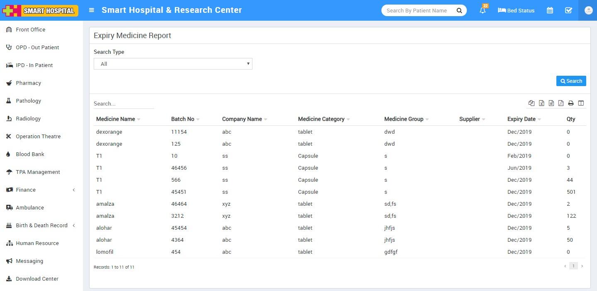
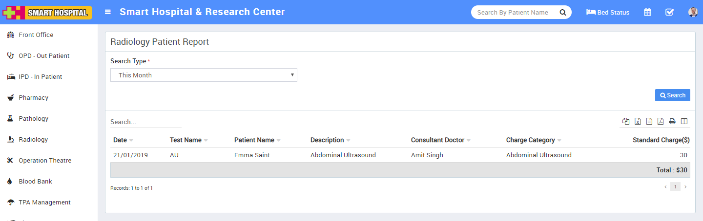
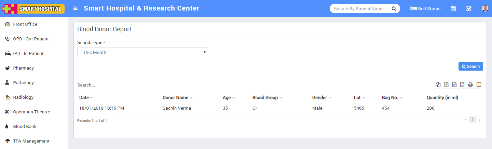

Smart Hospital : Hospital Management System
The only software need to run your hospital Smarter.
By

Ver. 2.1
Email: support@qdocs.in
Website: smart-hospital.in
We would like to thank you for purchasing Smart Hospital! We are very pleased you have chosen Smart Hospital for your institution, you will not be disappointed! Before you get started, please be sure to always check out these documentation files. We outline all kinds of good information, and provide you with all the details you need to use Smart Hospital. Smart Hospital can be used with any hospital, clinic, pathology center, radiology center, pharmacy, blood bank or medical training institute.
If you are unable to find your answer here in our documentation, watch our Video Tutorials, you can also visit our Help & Support. Chances are your question or issue have been brought up already and the answer is waiting to be found. If you are unable to find it anywhere, then please go our Support section and open a new Support Ticket with all the details we need. Please be sure to include your site URL as well. Thank you, we hope you enjoy using Smart Hospital!
To read latest and updated documentation please visit smart-hospital.in/docs
Help & SupportSystem Requirements
To installing Smart Hospital, Your web server must be running PHP 5.4 or higher and Mysql 5.1 or higher. We have tested it with Windows, Mac and Linux but for optimum performance we will recommend to use Linux with Apache webserver. Below are a list of items you should ensure your host can comply with.
- PHP 5.4+
- MYSQL 5.1+
- mod_rewrite Apache
- MBString Extension
- MYSQLi Extension
- Zip Extension
- CURL Extension (recommended) * In most hosting accounts, these extensions are enabled by default. But you should check with your hosting provider.
Before installation Smart Hospital to install and work properly, you must make few directories/files writable. Below are a list of directories/files you should ensure that have write permissions.
- installation_dir/application/config/config.php
- installation_dir/application/config/database.php
- installation_dir/application/config/autoload.php
- installation_dir/application/config/license.php
- installation_dir/temp
- installation_dir/backup
- installation_dir/backup/database_backup
- installation_dir/backup/temp_uploaded
- installation_dir/uploads
- installation_dir/uploads/<all_its_sub_directories>
Smart Hospital Installation
Smart Hospital comes with a simple automatic installer.
- Configure database connection
You need to have previously setup database from the cPanel or your hosting provider.
Here is a good tutorial how to setup MySQL database in cPanel if you are not familiar with this.
- Login to cPanel by accessing www.yourdomain.com/cpanel and navigate go MySQL Databases.
- Create database first.
- Create user and setup your password.
- Add the user to database by selecting the database and the username.
Make sure you have checked All privileged when adding the user to database.
- Install
Find the folder smart_hospital_src in your downloaded package from Codecanyon. This folder contains complete source code files need to install Smart Hospital. Upload all the files under this folder to your hosting folder and navigate to your url http://yourdomain.com/ . After hitting url http://yourdomain.com/ system redirects to http://yourdomain.com/install/start to start installer.
You will need to pass the server requirements in order to install Smart Hospital.
Click Database Setup and populate the fields according to your database setup.
If any errors found while connecting you will be notified otherwise you should see the credentials screen
Enter Super Admin Email and Password for your Admin Panel Login
Great! You have successfully installed Smart Hospital. At last step click on Delete Install Directory and Login button to go to Admin Panel Login page.
If you need help for installation, do not hesitate to open Support Ticket
After successful installation you need to setup few things about your hospital. Smart Hospital comes with some predefined data but you still need to configure them as per your hospital.
Upgrading from Previous Version
Upgrading from Version 1.1 to Version 2.1
If you are already using Smart Hospital version 1.1 then you should upgrade your Smart Hospital to current version 2.1 to get all the new features and fixes if any. The upgrade is pretty simple just follow the steps below and you will get the newest version of Smart Hospital.
Check the changelog for changes and bug fixed in this version.
Always backup your all files and database before making an upgrade to avoid any accidental data loss
- Create backup of all files you have made changes or customized for your features (including your language file if you are using other than English).
- Download the latest Smart Hospital version 2.1 from CodeCanyon. Now extract and open update/Upgrading from Version 1.1 to Version 2.1/step-1 folder.
- Copy all the content under step-1 folder and overwrite to under your Smart Hospital installation folder.
- After that go to http://yourdomain.com/migrate and if upgrade is successful a message will be shown that "Database updated successfully".
- After it copy all the files under step-2 folder and overwrite to under your Smart Hospital installation folder.
- Check all directories permission required in System Requirements section.
- Clear the cache of your browser and login to Admin Panel.
- If you are using your own language (other than English), make sure to add key phrases in language files described in Languages section System Settings > Languages.
If you experience any trouble while updating, open support ticket and we will be happy to assist you.
Upgrading from Version 2.0 to Version 2.1
If you are already using Smart Hospital version 2.0 then you should upgrade your Smart Hospital to current version 2.1 to get all the new features and bug fixes if any. The upgrade is pretty simple just follow the steps below and you will get the newest version of Smart Hospital.
Check the changelog for changes and bug fixed in this version.
Always backup your all files and database before making an upgrade to avoid any accidental data loss
- Create backup of all files you have made changes or customized for your features (including your language file if you are using other than English).
- Download the latest Smart Hospital version 2.1 from CodeCanyon. Now extract and open update/Upgrading from Version 2.0 to Version 2.1/step-1 folder.
- Import file permission_tbl.sql file in your Smart Hospital database through phpmyadmin.
- After it copy all the files under step-2 folder and overwrite to under your Smart Hospital installation folder.
- Check all directories permission required in System Requirements section.
- Clear the cache of your browser and login to Admin Panel.
- If you are using your own language (other than English), make sure to add key phrases in language files described in Languages section System Settings > Languages.
If you experience any trouble while updating, open support ticket and we will be happy to assist you.
Using Smart Hospital
Smart Hospital - General Overview
Before start using Smart Hospital consider a general scenario of typical hospital have different departments like OPD, IPD, Pharmacy, Pathology, Radiology, Operation Theatre, Blood Bank, Accounts, Admin etc. where we perform different patient and hospital related activities.
Apart from above we also like to provide access to our Smart Hospital to different users like Doctors, Accountants, Pharmacist, Radiologist, Pathologist, and Patient. For these Smart Hospital have 9 inbuilt user's roles - Super Admin, Admin, Doctor, Accountant, Pathologist, Radiologist, Nurse, Receptionist and Patient. Virtually you can create unlimited number of user roles for staff members.
Admin Panel
Login to Admin Panel through URL - http://yourdomain/site/login
After successful login you will reach to Admin Dashboard. Below you can find navigational overview of user screen.
Admin Panel consist 22 modules listed below -
- Front Office - for all OPD appointment and reception/front office related activities like enquiries, calls, visitors, postal receive/dispatch
- OPD - Out Patient - for all OPD patient registration, visits, revisits, old OPD patients
- IPD - In Patient - for all IPD patients admission, consultant register, diagnosis, timeline, IPD charges, payments, bill and discharged ipd patients
- Pharmacy - for all medicine list, stock, and pharmacy bills
- Pathology - for all pathology test details and patient test records
- Radiology - for all radiology test details and patient test records
- Operation Theatre - for managing patient operation activities and operation records
- Blood Bank - for managing blood group available blood stock, donor details and blood issue details
- TPA Management - Third Party Administrator for managing changes and records of insurance or mediclaim companies
- Finance - for managing general income and expense
- Ambulance - for managing ambulance vehicles and ambulance call details
- Birth And Death Record - for managing all details of newly born babies birth and patients death
- Human Resource - for all the information related to staff members can be manage here like staff search, profile, attendance, payroll, leaves
- Messaging - it works like a notice board basically a messaging system for communication to patient and staff
- Download Center - for managing downloadable documents that need to distribute staff
- Inventory - manage all the assets of your hospital with stocks and store under inventory module
- Front CMS - manage front website of Smart Hospital here by creating pages, menus, events, gallery, news
- Reports - all the various reports related to different modules can be found here
- Patient - all patient related details can be found here
- Notifications - all automated notifications can be found here
- Calendar & ToDo List - track and manage all daily/monthly activities and create your task in todo list
- Setup - configure Smart Hospital here for different settings like hospital, sessions, admin password, SMS, Paypal, backup / restore, languages
To understand how Smart Hospital works first we need to configure and setup it for our hospital. In this whole documentation we will consider our sample hospital which is Smart Hospital & Research Center.
Steps to setup your Smart Hospital -
- In the Admin panel go to Setup > Settings > General Setting in upper right side click on Edit button to update your hospital data.
- Update your Hospital Name, Address, Phone, Email, Hospital Code (Hospital Code is your hospital registration / accreditation no), Language (language in which you want to run your Smart Hospital), Language RTL Text Mode (for Arabian side languages), Timezone, Time Format, Currency (ISO standard 3 digit currency code), Currency Symbol and Credit Limit (used for IPD module balance amount credit limit), Doctor Restriction Mode (if Doctor Restriction Mode is disabled then all doctors can see other doctors patients in their account and if Doctor Restriction Mode is enabled then doctors can see only their assigned patients in OPD, IPD, OT and Appointment) now click on Save button to update record, Superadmin Visibility (if Superadmin Visibility is disabled then superadmin will not be visible to system for other staff users and if Superadmin Visibility is enabled then other staff users can see superadmin in system) now click on Save button to update record.
- For updating your hospital logo click on right column Edit Logo buttons.
- For enabling automated email/sms notification on different events go to Setup > Settings > Notification Setting page.
- For automated SMS messaging add any one of available SMS Gateway with the required details from Setup > Settings > SMS Setting.
- For automated Email messaging by default SendMail is selected in Smart Hospital. If your hosting server supports SendMail then your will get emails by default otherwise you have to select SMTP email engine. For SMTP you can use any free or paid smtp service like Gmail. To enter your SMTP server details go to Setup > Settings > Email Setting > SMTP.
- To enabling online payment in Patient Panel update your payment gateway account details for this, go to Setup > Settings > Payment Methods select your appropriate payment gateway and add you payment gateway account details then click on save button and enable it from right side box.
- At this point we have completed basic settings of our hospital. Now we will add our hospital other details in Smart Hospital like Hospital Charges, Bed, Ward, Floor, Departments, Doctors etc.
- For adding Hospital Charges go to Setup > Hospital Charges, Here first we will add Charge Category, for this click on Add Charge Category button. Now enter Name, Description and select Charge Type like Procedures (is for general ipd charges like doctor visit), Investigations (is for pathology/radiology lab test or other investigations), Supplier (is for other things supply like oxygen charges), Operation Theatre (is for operation theatre charges) and Other (is for other miscellaneous charges).
Now we will add Charges for this click on Add Charge button. Now select Charge Type, Charge Category, enter Charge Code (it is like short code to differentiate two charges for same charge type and charge category), then enter Standard Charge, Description and if there is any TPA (Third Party Administrator or Insurance organization) is present then enter Scheduled Charge for this also)

- For adding Bed and their details go to Setup > Bed.
Here first we will add Floors, Bed Groups, Bed Type. To add Floors click on + Add button then enter Floor Name and Description.
To add Bed Group click on + Add button then enter Bed Group Name, select Floor and enter Description.
To to add Bed Type click on + Add button then enter Bed Type Name.

Now to add Bed click on + Add button then enter Bed Name, select Bed Type and Bed Group.
At Bed Status page we can check current status of all bed.
- For adding header and footer in OPD prescription, IPD Bill, Pharmacy Bill, Payslip go to Setup > Print Header Footer

To add OPD Prescription Header and Footer click on + Add button now select Header image then enter Footer text.
To add IPD Bill Header and Footer click on + Add button now select Header image then enter Footer text.
To add Pharmacy Bill Header and Footer click on + Add button now select Header image then enter Footer text.
To add Payroll Slip Header and Footer click on + Add button now select Header image Then enter Footer text.
To add other modules print header footer do the same thing.
- To setup Front Office go to Setup > Front Office.
To add Visitor Purpose click on + Add Purpose button now enter Purpose and Description.
To add Complain Type click on + Add Complain Type button now enter Complain Type and Description.
To add Complain Source click on + Add Source button now enter Source and Description.
-
To setup Pharmacy go to Setup > Pharmacy.
To add Medicine Category click on + Add Medicine Category now enter Medicine Category Name.
To add Supplier click on + Add Supplier now enter Supplier Name, Supplier Contact, Contact Person Name, Contact Person Phone, Address.
To add Medicine Dosage click on + Add Medicine Dosage now enter Medicine Category, Dosage.
-
To setup Pathology go to Setup > Pathology.
To add Pathology Category click on + Add Pathology Category now enter Pathology Category Name.
-
To setup Radiology go to Setup > Radiology.
To add Radiology Category click on + Add Radiology Category now enter Radiology Category Name.
-
To setup Finance go to Setup > Finance.
To add Income Head click on + add Income Head button now enter Income Head and Description.
To add Expense Head click on + Add Expense Head button now enter Expense Head and Description.
-
To setup Birth & Death Record go to Setup > Birth & Death Record.
To add Birth Record Custom Fields click on + Add button now enter Name and Visibility.
To add Death Record Custom Fields click on + Add button now enter Name and Visibility.
-
To setup Human Resource go to Setup > Human Resource.
To add Leave Type click on + Add Leave Type button now enter Leave Type Name.
To add Department click on + Add Department button now enter Department Name.
To add Designation click on + Add Designation button now enter Designation Name.
-
To setup Inventory go to Setup > Inventory.
To add Item Category click on + Add Item Category now enter Item Category and Description.
To add Item Store click on + Add Item Store button now enter Item Store Name, Item Stock Code and Description.
To add Item Supplier click on + Add Item Supplier button now enter Item Supplier Name, Phone, Email, Contact Person Name, Address, Contact Person Phone, Contact Person Email and Description.
- Great! you have completed your Smart Hospital setup. Now further we will understand working of all the modules one by one in detail.
Front Office
This module has 5 sections -
- Add Appointment
- Visitor Book
- Phone Call Log
- Postal
- Complain
- Add Appointment - Appointment feature is for making Doctor Appointment. Receptionist or any permitted user can enter doctor appointment details here, also here can be Approved/Cancelled online appointments. To add new appointments click on + Add Appointment button. Here select existing patient from Select Patient dropdown then enter Date, if patient is new then enter Patient Name, then enter Gender, Email, Phone, Doctor Message and Status.

You can move approved appointment to OPD or IPD in single click

- Visitor Book - Visitor Book is for managing visitor’s records coming in hospital. For this click on Visitor Book button. To add visitor details click on + Add Visitor button, now enter visitor person Purpose, Name, Phone, ID Card Number of Person, Date, In time, Out Time Note and Attached Document if any.
- Phone Call Log - Phone Call Log is for managing incoming or outgoing call details for this click on Phone Call Log button. To add Phone Call Log click on + Add Call Log button, now enter Person Name, Phone, Date, Description, Next Follow Up Date, Call Duration, Note and Call Type Incoming or Outgoing.
- Postal Receive - Postal Receive is for managing postal inward documents for managing postal receive click on Postal Receive button. To add Postal Receive click on + Add Receive button now here enter From Title, Reference Number, Address, Note, To Title, Date, Attach Document if any.
- Postal Dispatch - For managing Postal Dispatch click on Postal Dispatch button. To add Postal Dispatch click on + Add Dispatch button now here enter To Title, Reference Number, Address, Note, From Title, Date and Attach Document if any.
- Complain - Complain is for managing any complain raise by any person for this click on Complain button. To add complain click on + Add Complain button now enter Complain Type, Source, Complain By, Phone, Date, Description, Action Taken, Assigned, Note and Attach Document if any.
OPD - Out Patient
OPD (Out Patient Department) module is for managing out patient who just come for doctor for their issue/disease check up.
- To add new OPD patient click on + Add Patient button now enter Select Patient from dropdown or add +New Patient,Guardian Name, Gender, Age, Blood Group, Marital Status, Patient Photo, Phone, Email, Address, Remarks, Any Known Allergies, Height, Weight, BP, Symptoms, Note, Appointment Date, Case, Casualty, Old Patient, TPA (Third Party Administrator), Reference, Consultant Doctor, Amount, Payment Mode. After adding patient it will list on OPD Patient page now here you can click on Show button to see patient details.
- Here we can see 3 tabs Visits, Diagnosis and Timeline. Visits tab has all details of patient visit to add visit Prescription click on Add Prescription button here you can enter Prescription Header Note, Medicine and Prescription Footer Note. After adding prescription you can see and print prescription by clicking on View Prescription button.
- To see OPD visit details click on Show button. If this patient comes again for revisit then you can simply click on Revisit button to add this patient OPD revisit details.
- To see patient OPD Diagnosis details click on Diagnosis tab. Here you can see patient all OPD diagnosis details.
To add new diagnosis report click on + Add Diagnosis button here enter Report Type, Report Date, Attach Document and Description. - To see patient timeline click on Timeline tab. Here you can see patient timeline or you can enter any note in timeline.
To add new timeline click on + Add Timeline button here enter Title, Date, Description, Attach Document, by default all timeline are visible to this patient. If you want this timeline is not visible for this patient then UnCheck visible to this person CheckBox now click on Save button to save this timeline. Generally OPD has only one time charges and doctor checkup but if you want to use OPD for adding multiple charges, multiple payments and bill like IPD (please check IPD module) then click on OPD No. of patient opd visit, now you can see more tabs available in OPD module like Charges, Payment & Bill. These extra features can be used in Speciality Medical Clinics (dental clinics) which do patient's treatment in single visits but apply multiple charges for different treatments and give detailed bill.
If you want patent to be recheckup on same OPD No then you can use Recheckup feature, for this click on Recheckup button from Visit tab and enter required details for of recheckup, it is also same like OPD visit but recheckup created under same OPD No.
IPD - In Patient
IPD (In Patient Department) module is for managing those patient who admit in hospital for their issues/disease treatment.
- To add new OPD patient click on + Add Patient button. select Patient Name from dropdown or click on + New Patient button to add new patient then enter Admission Date, Case, Casualty, Old Patient, TPA (Third Party Administrator), Credit Limit, Reference, Consultant Doctor, Bed Group, Bed Number. After adding patient it will list all IPD Patient page. To see patient details click on Show button.
- Here we can see 7 tabs Consultant Register, Diagnosis, Timeline, Prescription, Charges, Payment, Bill.
- Consultant Register tab has all details about instructions given by doctors day to day for this patient's treatment. To add instruction click on + Add Consultant Instruction button here enter Applied Date, Consultant Instruction and Instruction date.

- To see patient IPD Diagnosis details click on Diagnosis tab. To add new Diagnosis Report click on + Add Diagnosis button. Here enter Report Type, Report Date, Attach Document and Description.
- To see patient IPD Timeline details click Timeline tab. To add new Timeline click on + Add Timeline button here enter Timeline Title, Date, Description, Attached Document.
- To add Prescription click on + Add Prescription button here you can enter Prescription Header Note, Medicine and Prescription Footer Note.
- To see patient IPD Charges details click Charges tab here you can see all applied charges for patient day to day treatment. To add new charges click on + Add Charges button, here enter Date, Charge type, Charge Category, Charge Code,(here Charge Type, Charge Category, Charge Code comes from Setup > Hospital Charges). if patient comes under any TPA scheme (TPA selected at time of patient admission in IPD) then TPA charge will be applied as applied charge, finally if you need you can edit Applied Charge in textbox.
- To see patient IPD Payment details click Payment tab. Here you can see all payments done by patient. To add new payment click on + Add Payment button here enter payment Amount, Payment Mode, Date, Attach Document and Note.
- To see patient IPD Bill details click Bill tab. Here you can see patient IPD Bill breakdown in Applied Charges, Payment done and Bill Summary with Total Charges, Total Payment Balance here if you want you can apply Discount, Other Charges and Tax while generating final bill. To generate final bill click on Calculate button it will calculate final bill and show Net Payable Amount after receiving net payable amount you can click on Generate Bill And Discharge Patient button to discharge this patient and close its IPD admission. After clicking this button patient final bill will be generated and patient will be marked as Discharged and its occupied bed also become free. Finally you can print bill by clicking on Print bill button. After discharge patient will be display in IPD Discharge Patient List Instead of IPD Patient List.
- To see Discharge Patient List click on Discharged Patient button. Here you can see all details of IPD Discharge patient. To see discharge patient details click on Show button, here you can see discharge patient all details like Consultant Register, Diagnosis, Timeline, Charges, Payment and Bill . Once patient has been discharged you can add only his timeline. If you have accidentally discharge any patient and want to revert discharged status then go to Bill tab and click on Revert Generated Bill button. After clicking on this button this patient will be visible as normal IPD patient and you can enter all the activities in IPD patient details page.
Pharmacy
Pharmacy module is for managing medicines stock, selling and generating medicine bill.
- Managing medicines click on Medicines button. You can see all medicine list with their name and available stock here. If a medicine row shows as white colour means its a stock is normal, if row colour is sky blue it means its stock is below than reorder level, if row colour is yellow means its stock below to minimum level and if row colour is red that means medicine is out of stock.

- To add new medicine click on + Add Medicine button here enter Medicine Name, Medicine Category, Medicine Company, Medicine Composition, Medicine Group, Supplier, Unit, Minimum Level, Reorder Level, VAT, Unit/Packing, VAT Account, Note and Medicine Photo. To see medicine details and stock entry click on Show button, here you can also check medicine stock entry and bad stock entry details.
- To import medicines click on Import Medicine button. Here select Medicine Category from dropdown and select CSV file, then click on Import Medicine button.
- To add medicine stock you should enter purchased medicine details, for this click on Purchase button here you can see list of purchased medicines.
To add purchased medicine details click + Purchase Medicine button now here enter Supplier name, Purchase Date, Medicine Category, Medicine Name, Batch No, Expiry Date, MRP($), Batch Amt, Sale Price($), Packing Qty, Quantity, Purchase Price($), Amount($), Note, Attach document, Discount, Tax. After filling all relevant details, click on Calculate button then final amount will be calculated then click on Save button.
- To add medicine bad stock or return stock click on Add Bad Stock button here enter Batch Number Expiry Date Outward Date Quantity and Note.
- To import medicines for stock click on Medicines button. Here you get Import Medicine button. Click on this button. With the help of this option, you can purchase medicine in large number of quantity. Select Medicine Category from dropdown box and select CSV file, then click on Import Medicine button.
[image] - To generate medicine sales bill click on Generate Bill button at pharmacy bill page, here enter Bill Number, Date, Patient Type, OPD/IPD Number, Patient Name, Doctor Name, Medicine Category, Medicine Name, Batch Number, Quantity, Sale Price, Amount to add more medicine click on "+" sign, after adding all medicine enter Discount or Tax if any to calculate final bill click on Calculate button then click on Save button. After this bill will be display on pharmacy bill page. To see bill details click on Show button now here you can also Print medicine bill.
Pathology
Pathology module is for managing patient pathology test and reports.
- To add pathology test click on + Add Pathology Test button here enter Test Name, Short Name, Test Type, Category Name, Unit, Sub Category, Method, Report Days, Charge Category, Code, Standard Charge here charge category and code will come from hospital charges investigation charge type. Added pathology test will be list on pathology test page.
- To enter patient test report for a pathology test click on + Add Patient & Report icon button. Here select Patient Name from dropdown or click on + New Patient button to add new patient then enter Reporting Date, Description, Test Report, Referral Doctor. Remaining field like Charge Category, Code, Standard Charge($), Applied Charge($) will automatically add, which has been set in Hospital Charge. Click on Save.
- To see added patient report click on Test Report button on pathology test page.
Radiology
Radiology module is for managing patient radiology test report.
- To add radiology test click on + Add Radiology Test button here enter Test Name, Short Name, Test Type, Category Name, Sub Category, Report Days, Charge Category, Code, Standard Charge here charge category, code will come from hospital charges investigation charge type. Added radiology test will be list on radiology test page.
- To enter patient test report for a radiology test click on + Add Patient & Report icon button. Here select Patient Name from dropdown or click on + New Patient button to add new patient then enter, Reporting Date, Description, Test Report, Referral Doctor. Remaining field like Charge Category, Code, Standard Charge($), Applied Charge($) will automatically add, which has been set in Hospital Charge. Click on Save.

- To see added patient report click on Test Report button on radiology test page.
Operation Theatre
Operation Theatre module is for managing operation theatre activities and patient operations.
- To add new patient click on + Add Patient button Here select Patient Name from dropdown or click on + New Patient button to add new patient then enter, Height, Weight, BP, Symptoms, Note, Operation Name, Operation Type, Operation Date, Consultant Doctor, Assistant Consultant 1, Assistant Consultant 2, Anesthetist, Anesthesia Type, OT Technician, OT Assistant, TPA (third party administrator), Charge Category, Code, Standard Charge, Applied Charge. Added patient will be list on operation theatre patient page.
- To see operation details click on Show button
- After operation manage all patient instructions given by consultant in Consultant Register for this click on Consultant Instruction button.
-
After operation, you can see bill detail of patient, click on any patient Bill No. tab. Here you can see bill detail of any perticular patient.
Blood Bank
Blood Bank module is for managing blood bank status, donor details and blood issue details.
- Currently blood bank status is not automated so you have to edit status manually for every blood group though in future updates we will make it automated.
- For donor details page click on Donor Details button. At this page you can check all donor details. To add new blood donor click on + Add Blood Donor button, here enter Donor Name, Age, Blood Group, Gender, Father Name, Contact Number and Address.
- For blood issue page click on Blood Issue Details button at blood bank status page. At this Blood Issue Details page you can check all issued blood details. To issue blood click on Issue Blood button Here select Patient Name from dropdown or click on + New Patient button to add new patient then enter Issue Date, Doctor Name, Donor Name, Blood Group, Technician, Lot, Bag Number, Amount and Remarks.

- To see bill details page click on Blood Issue Details button at blood bank page. At this, click on any Bill No.. Here you can see Received to(Blood Receiver No), Doctor, Donor Name, Institution, Technician, Lot, Bag No, Remarks, Amount.
TPA Management
TPA module is for managing third party administrator or mediclaim insurance provider companies.
- Add new TPA click on + Add TPA button here enter TPA Organisation Name, Code, Contact Number, Address, Contact Person name, Contact Person Phone.
- To see TPA organization details click on Organisation Profile button. Here you can edit or delete different associated charges for this tpa organisation in different charge types. Associated charges should be applied first from hospital charges module.

Finance
Finance module has 2 sections -
- Income
- Expense
- Income - here we will manage all general income coming from different Income Heads. To add new income click on + Add Income button, here enter Income Head, Name, Invoice Number, Date, Amount, Attach Document and Description.
- Expense - here we will manage all expenses coming from different Expense Heads. To add new expense click on + Add Expense button here enter Expense Head, Name, Invoice Number, Date, Amount, Attach Document and Description.
Ambulance
Ambulance module is for managing ambulance vehicles and ambulance calls for patient travelling.
- To add new ambulance vehicle click on + Add Ambulance button here enter Vehicle Number, Vehicle Model, Year Made, Driver Name, Driver Licence, Driver Contact, Vehicle Type and Note.
- To see ambulance call click on Ambulance Call button.
- To add new ambulance call click on + Add Ambulance Call button. Here select Patient Name from dropdown or click on + New Patient button to add new patient then enter, Vehicle Model, Driver Name, Date, Amount.
Birth & Death Record
This module is for managing babies birth & patients death record in hospital. Birth & Death Record module has 2 sections -
- Birth Record
- Death Record
-
Birth Record - here we will manage all babies birth record happened in hospital. To add record, click on + Add Birth Record , here you enter Child Name, Gender, Weight, Child Photo, Birth Date, Phone, Address, Mother Name, IPD/OPD Number, Mother Photo, Father Name, Father Photo, Report, Attach Document(Any ID Proof or other required document), Custom Field(Optional).


After adding birth record you can print baby birth certificate
-
Death Record - here we will manage all expired patient record happened in hospital. To add record, click on + Add Death Record, here you enter Patient Name, IPD/OPD No, Death Date, Guardian Name, Report, Custom Field(optional).
-
If you have to view death record of any patient, click on Show , Here you can see OPD/IPD No, Patient, Gender, Death Date, Address, Death Report, Responsible Name .
Human Resource
This module has 4 sections -
- Staff Directory
- Staff Attendance
- Payroll
- Leaves
In Human Resource we will manage all activities of hospital staff (not patient) from Doctor to Owner or Peon or any hospital member even he/she using or not using Smart Hospital application. First we will add Staff Member from Staff Directory then we will manage day by day Staff Attendance then manage Payroll/Salary of staff then Apply or Approve Leave Request.
- Staff Directory - here you can search all active staff members. You can filter staff members by Role or search by any keyword. You can also see staff directory in two views Card View or List View.
You can edit any staff by clicking on Edit button on Staff Card. To view staff details/profile click on View button present on staff card. Staff profile provides 360* view of staff including complete profile, payroll, payslip, allotted/apply/approved leaves, monthly/yearly attendance, uploaded documents and timeline. After staff retirement or reliving you can Disable staff Thumbs Down Red Icon button. After disabling staff, staff profile is marked as red color in background and its login to Smart Hospital also being disabled. Disabled staff can be seen in Human Resource > Disabled Staff. You can also add staff leaving date and resignation letter from staff Edit. Staff can be deleted after disabling staff.
To add new staff member click on + Add Staff button from top right corner of this page. Enter Staff ID, select Role (roles can be manage from Setup > Settings > Roles Permission), Designation, Department, First Name, Last Name, Father Name, Mother Name, Gender, Marital Status, Date Of Birth, Date Of Joining, Phone, Emergency Contact Number, Email, Photo, Current Address, Permanent Address, Qualification, Work Experience, Specialization, Note, EPF No (Employee Provident Fund Number), Basic Salary, Contract Type, Work Shift, Location, Leaves(Sickness, Personal), Bank Account Title, Bank Account Number, Bank Name, IFSC Code, Bank Branch Name, Facebook URL, Twitter URL, LinkedIn URL, Instagram URL, Upload Resume, Joining Letter and Other Documents then click on Save button. - Disabled Staff - Go to Human Resource > Disabled Staff here you can see all Disabled Staff. Click on any staff to see his/her profile. At profile page you can see Delete Staff button, by deleting staff all profile data will be deleted. To Enable any Disabled staff click on Green Colour Thumbs Up Icon button.
- Staff Attendance - here you can record staff attendance. Select Staff Role and Attendance Date then click on Search button. Now can see staff list, select attendance radio button for Present/Late/Absent/Half Day and enter any Note then click on Save Attendance button to submit attendance. If you mark selected date as Holiday then check button Mark As Holiday. If attendance has been already submitted then you will get message of "Attendance Already Submitted You Can Edit Record" in this case you can still edit exiting attendance.
- Payroll - here we will generate monthly salary of staff members. Select Role, Month and Year then click Search button to see staff members list and their payroll status. Now you can see staff list, from Status column you can see current salary status available option from Action column. Payroll has three status Not Generated -> Generated -> Paid. If status is Not Generated then you can see Generate Payroll button, if status is Generated then you can see Proceed To Pay button and if status is Paid then you can see View Payslip button in Action column. If status is Generated or Paid then you can revert this status in previous status.
Now click on Generate Payroll button from Action column. At this page you can see staff profile, attendance, approve leaves details. In earning column add earning Type and Amount then in deduction column enter deduction Type and Amount (from top right corner Attendance section you can check this month all attendance and approve details based on this you can calculate deduction for this staff) then in Payroll Summary column enter any tax if applied then finally click on Calculate button to calculate Net Salary amount then click on Save button to save this salary generation.
Now come again on payroll page and check this staff payroll status for same month now it should be Generated and in Action column Proceed To Pay button should be visible. Here click on Proceed To Pay button to pay generated salary to this staff. Now at Proceed To Pay modal popup window you can Staff, Net Payment Amount, Month-Year, select Payment mode through which you are paying salary, Payment Date, and Note then click on Save button. Now come again on payroll page and check this staff payroll status for the same month now it should be Paid and in Action column View Payslip button should be visible. Here click on View Payslip button to see and print payslip.
- Leaves - Here you can apply for leave request or if you have permissions then you can approve other leave request. For approve leave request click on Approve Leave Request button here you can view, approve or manually submit staff leave request. Click on View icon button from Action column to see details of applied leave request. Now at this modal popup window you can see details of leave request and change its status to Approve/Disapprove/Pending then enter any Note then click on Save button. To add leave request manually click on + Add Leave Request button from top right corner. Here select Role, Staff Name, Apply Date, Leave Type, Leave Date, reason, Note, Attach Document and Status of leave request then click on Save button. Apply Leave - to apply self leaves click on Apply Leave button, here logged in staff user can apply/view leave request for his own only. To view applied leaves click on View icon button from Action column. To apply leave click on + Apply Leave button from top right corner.
Messaging
This module is for sending different messages to different users.
- Notice Board is for sending common messages to all staff members to add new notice board message click on +Post New Message button, here enter Message Title, Message Text, Notice Date, Publish On Date and Message To different types of staff users.
- To send Email /SMS click on Send Email /SMS button. Here you can send two types of messages either group messages or individual user messages to send group messages click on Group tab, here enter Message Title, Send Through Email or SMS, Message Text, Message To select different users group.
Download Center
Download Center is for managing different documents which should be available for download to other staff members.
- To upload document click on + Upload Content button here enter Content Title, Content Type, Upload Date, Content File and Description.

Inventory
Inventory module is for managing different assets or items present in hospital. First we will add items then add item stocks then we will manage issue and return of items to different staff members.
- To see items click on Item button. At this page to add new items click on + Add Item button here enter Item Name, Item Category, Unit, Purchase Price and Description.

- To add item stock click on + Add Item Stock button, here enter Item Category, Item Name, Supplier, Store, Quantity, Purchase Price, Date, Description and Attach Document.
- To see issue or return item click on Issue Item button. To issue an item click on + Add Issue Item button, here enter User Type, Issued to, Issue By, Issue Date, Return Date, Note, Item Category, Item and Issue Quantity.
To return an item click on Click To Return button.
Front CMS
Front CMS module for managing hospital front website. First we will upload different images or files used in front website in Media Manager then we will create front website menu in Menus then we will add different Pages, Events, Galleries, News and Banner images.
- To use Front CMS first we will configure it by Setup > Settings > Front CMS Setting here we can enable/disable Front CMS, Sidebar, Language RTL Text Mode, check Sidebar Option, upload Logo, Favicon, enter Footer Text, Google Analytics, Facebook URL, Twitter URL, Youtube URL, Google Plus, Linkedin URL, Instagram URL, Pinterest URL and Current Theme (there are 3 pre-built themes supplied with Smart Hospital but you can create your own theme by copying "default" theme with your own name in same folder. For themes /application/views/themes contains php view files and /backend/themes folder contains css, js, images etc. files).
- To manage images or files in media manager click on Media Manager button hear drag and drop or upload your desired file. Uploaded file will be displaying in media manager. Click on image or file to see this image details.
- In media manager you can also upload your YouTube video URL. For this enter your YouTube URL then click on Submit button
- To manage menus click on Menus button. Here by default you will get two menu Main Menu and Bottom Menu. Here you can add more menu but these other menu will be only display in front site if you will add them in front site theme additionally. To manage existing menu click on + Plus button. To add new menu item enter Menu Item, select it will point to External URL or a CMS Page, it's link will be Open In New Tab or same tab, enter External URL Address or select CMS Page. To change menu ordering click on a menu and drag and drop it that place up or down. To add appointment form page link in front site Appointment menu create an Appointment menu and link it with your (appointment page url is predefined https://yourdomain.com/form/appointment ) appointment page .
- Now we will add pages in front site. By default 5 pages are pre built e. g. Home page, Appointment, Contact Us, Complain and 404 page. To change these pages you can edit these pages. To add new pages click on Add Page button. Here enter Page Title, Page Type (Standard, Events, News or Gallery), Page Description, + Add Media to select media from Media manager, SEO details for Meta Title, Meta Keyword, Meta Description, Sidebar Setting enable/disable, select Featured Image.
- To add new Event click on Add Event button. Here you can add all events scheduled past/future in your hospital. To add new event click on + Add button. Here enter event Title, Event Venue, Event Start Date, Event End Date, Description, SEO Detail Meta Title, Meta Keyword, Meta Description then select Sidebar Setting, Featured Image then click on Save button.

- To add new gallery click on Add Gallery button. Here you can add all image/video galleries of your hospital. To add new gallery click on + Add button. Here enter gallery Title, Description, Gallery Images, SEO Detail Meta Title, Meta Keyword, Meta Description then select Sidebar Setting, Featured Image then click on Save button.
- To add new news click on Add News button. Here you can add all News/Notices of your hospital. To add new news click on + Add button. Here enter news Title, News Date, Description, SEO Detail Meta Title, Meta Keyword, Meta Description then select Sidebar Setting, Featured Image then click on Save button.

- To manage banners click on Banners button. To add image in banner click on + Add Images button.
Reports
Report module is for getting different reports related to various modules. Report module consist 18 reports as follows -
- Transaction Report
- Appointment Report
- OPD Report
- IPD Report
- Discharged Patient
- Pharmacy Bill Report
- Expiry Medicine Report
- Pathology Patient Report
- Radiology Patient Report
- OT Report
- Blood Issue Report
- Blood Donor Report
- TPA Report
- Income Report
- Income Group Report
- Expense Report
- Expense Group Report
- Ambulance Report
- Birth Report
- Death Report
- Payroll Month Report
- Payroll Report
- Staff Attendance Report
- User Log
- Patient Login Credential
- Email / SMS Log
- Inventory Stock Report
- Inventory Item Report
- Inventory Issue Report
- Transaction Report - Here in search type you can select different time intervals for report data. Also you can download this report as PDF.
- OPD Report - Here in search type you can select different time intervals for report data. Also you can download this report as PDF.
- IPD Report - Here in search type you can select different time intervals for report data. Also you can download this report as PDF.
- Pharmacy Bill Report - Here in search type you can select different time intervals for report data. Also you can download this report as PDF..
- Expiry Medicine Report - Here in search type you can select different time intervals for report data. Also you can
download this report as PDF..

- Pathology Patient Report - Here in search type you can select different time intervals for report data. Also you can download this report as PDF.
- Radiology Patient Report - Here in search type you can select different time intervals for report data. Also you can
download this report as PDF.

- OT Report - Here in search type you can select different time intervals for report data. Also you can download this report as PDF.
- Blood Issue Report - Here in search type you can select different time intervals for report data. Also you can download this report as PDF.
- Blood Donor Report - Here in search type you can select different time intervals for report data. Also you can
download this report as PDF.

- Income Report - Here in search type you can select different time intervals for report data. Also you can download this report as PDF.
- Income Group Report - Here in search type you can select different time intervals for report data. Also you can download this report as PDF.
- Expense Report - Here in search type you can select different time intervals for report data. Also you can download this report as PDF.
- Expense Group Report - Here in search type you can select different time intervals for report data. Also you can download this report as PDF.
- Ambulance Report - Here in search type you can select different time intervals for report data. Also you can download this report as PDF.
- Birth Report - Here in search type you can select different time intervals for report data. Also you can
download this report as PDF.
- Death Report - Here in search type you can select different time intervals for report data. Also you can
download this report as PDF.
- Payroll Month Report - Here you can select different month and year for report data. Also you can download this report as PDF.
- Payroll Report - Here in search type you can select different time intervals for report data. Also you can download this report as PDF.
- Staff Attendance Report - Here you can select different month and year for report data. Also you can download this report as PDF.
- User Log - Here in search type you can select different time intervals for report data. Also you can download this report as PDF.
- Patient Login Credential - Here in search type you can select different time intervals for report data. Also you can download this report as PDF.
- Email / SMS Log - Here in search type you can select different time intervals for report data. Also you can download this report as PDF.
- Inventory Stock Report - Here in search type you can select different time intervals for report data. Also you can download this report as PDF.
- Inventory Item Report - Here in search type you can select different time intervals for report data. Also you can download this report as PDF.
- Inventory Issue Report - Here in search type you can select different time intervals for report data. Also you can download this report as PDF.
Notifications
In top area in the main screen you can see bell icon for Notifications. Here different users will receive automated notification for 6 events -
- Appointment Created - at time of patient appointment has been created
- Appointment Approved - at time of patient appointment has been approved
- OPD Created - When a patient has been registered for OPD
- IPD Created - When patient has been registered for IPD
- OT Created - When patient has been registered for Operation Theatre
- Payroll - When concerning staff salary has been paid
Calendar ToDo List
This module has 2 sections -
- Calendar
- ToDo List
In Calendar we can add personal or public events can be visible under login panels. In ToDo List we can add our personal task.
- Calendar - Go to top right corner of page besides your profile icon you can see Calendar icon now at calendar page click on any date or time frame, at this modal window enter Event Title, Description, Event Date, Event Colour and Event Type (Public is visible to all, Private is only you can see this event, All <your role> is this event will be visible to all users of your role, Protected that means it is visible to all staff members but not patient) then click on Save button.
- ToDo List - Go to top right corner of page besides your profile icon you can see ToDo List icon, click on View All button now at calendar page right side you can see all your task click on + icon button, at this modal window enter Title and Date then click on Save button.
Setup
Setup module is for configuration settings and master entry forms for other modules to run whole Smart Hospital system properly. This module has 11 sections -
- Settings
- Patient
- Hospital Charges
- Bed
- Print Header Footer
- Front Office
- Pharmacy
- Pathology
- Radiology
- Finance
- Birth & Death Record
- Human Resource
- Inventory
- Settings - this section has 11 parts.
- General Setting
- Notification Setting
- SMS Setting
- Email Setting
- Payment Methods
- Front CMS Setting
- Roles Permissions
- Backup / Restore
- Languages
- Users
- Modules
-
General Setting - Update your Hospital Name, Address, Phone, Email, Hospital Code (Hospital Code is your hospital registration / accreditation no), Language (language in which you want to run your Smart Hospital), Language RTL Text Mode (for Arabian side languages), Timezone, Time Format, Currency (ISO standard 3 digit currency code), Currency Symbol, Credit Limit (used for IPD module balance amount credit limit), Doctor Restriction Mode (if Doctor Restriction Mode is disabled then all doctors can see other doctors patients in their account and if Doctor Restriction Mode is enabled then doctors can see only their assigned patients in OPD, IPD, OT and Appointment), Superadmin Visibility (if Superadmin Visibility is disabled then superadmin will not be visible to system for other staff users and if Superadmin Visibility is enabled then other staff users can see superadmin in system) and select Current Admin Theme, now click on Save button to update record
For updating your hospital logo click on right column Edit Logo buttons.
-
Notification Setting - in Smart Hospital there are 6 events OPD Patient Registration, IPD Patient Registration, IPD Patient Discharged, OPD Patient Revisit, Login Credential and Appointment Approved where automated Email / SMS are sending to concerning person's email / mobile number. To control, when email / sms notifications will be send use Notification Setting.
Check the following at which event, which person receive notification
- OPD Patient Registration: OPD Patient
- IPD Patient Registration: IPD Patient
- IPD Patient Discharged: IPD Patient
- OPD Patient Revisit: OPD Patient
- Login Credential: Patient, Staff
- Appointment Approved: Patient
-
SMS Setting - for SMS notifications to patient or staff you must have to add SMS Gateway details in Smart Hospital. Add Clickatell, Twilio, MSG91, Text Local, SMS Country or Custom SMS Gateway with the required details. You can add multiple sms gateways but only one can be enable at a time. You can also add any other http api based sms gateways through Custom SMS Gateway but it need to configure SMS Library in source code and require PHP coding skills. Through this you can add any SMS Gateway which supports http based api.

-
Email Setting - to send emails from Smart Hospital you need to configure Email Setting. Currently Email is available for SendMail and SMTP delivery engine.
Select SendMail email engine to send emails through your hosting SendMail program. By default SendMail is set as Email Engine. SendMail can only work and send emails if your cpanel hosting supports it. If SendMail not sending email then contact to your hosting provider. Since SendMail is easiest but less reliable so check your spam folders in email inbox because sometimes emails detected as spams if using SendMail.
Another option is to use SMTP as email engine. Select SMTP email engine to send email using any SMTP relay. You can use Gmail or any other free SMTP service provider to use SMTP email engine.
To use Gmail SMTP using your gmail email account, enter following details in SMTP Engine -- SMTP Username: your gmail email id
- SMTP Password: your gmail email account password
- SMTP Server: smtp.gmail.com
- SMTP Port: 587
- SMTP Security: tls
After above settings you will receive email successfully but if you are still not receiving emails that means you hosting provider has blocked external smtp ports or services in this case please contact to your hosting provider for smtp issues.
- Payment Methods - there are 3 payment gateways Paypal, Stripe and PayU available in Smart Hospital. For enabling patient or their guardian to pay IPD bill payment online through Patient Panel then you must have to enter and enable any one of payment gateway. You can add multiple payment gateway details but you can enable only one at a time. Add your payment gateway account details in required fields, then enable that payment gateway.
- Front CMS Setting - here we can enable/disable Front CMS, Sidebar, Language RTL Text Mode, check Sidebar Option, upload Logo, Favicon, enter Footer Text, Google Analytics, Facebook URL, Twitter URL, Youtube URL, Google Plus, Linkedin URL, Instagram URL, Pinterest URL and Current Theme (there are 3 default themes supplied with Smart Hospital but you can create your own theme by copying "default" theme with your own name in same folder. For themes /application/views/themes contains php view files and /backend/themes folder contains css, js, images etc. files).
- Roles Permissions - here we can create different Roles for staff users and then assign different user permission to this Role. To add new role enter Role Name then click on Save button all existing roles can be see from right side of this page. By default in Smart Hospital you will get 8 user roles Super Admin, Admin, Accountant, Doctor, Pharmacist, Pathologist, Radiologist, Receptionist, Nurse. You can edit name or permission of these roles except Super Admin. To assign permission click on Assign Permission button from Action column. At this page you can see Module wise different features and their different permissions. Carefully assign different permissions on roles. After assigning permission, check where it is effecting in system. There are 4 types of permissions present here View, Add, Edit and Delete. Here note that if you are assigning Add/Edit or Delete permission then View permission should be given obviously if you have not given View permission then system can behave inconsistent so in best practice if you are giving Add/Edit/Delete any one permission then give View permission too.
-
Backup/Restore - for taking backup of your Smart Hospital database click on
Create Backup button it will create a .sql file you can
Download it on your local system or Restore back in your system or
Delete backup file. You can also Restore database file from local system click on
Choose File select .sql file from your local system then click on
Upload button.
If you want to use auto backup feature of Smart Hospital then you should configure Cron settings on your hosting server for corn url http://yourdomain/cron/autobackup/<your-cron-secret-key> . To generate/regenerate your cron secret key simply click on Generate/Regenerate button under Cron Secret Key section. To view existing cron secret key click on eye icon button.
Setup cPanel Cron Job - Login to your cPanel and navigate to Cron jobs, add the following settings :
wget -q -O- http://yourdomain/cron/autobackup/<your-cron-secret-key> Change the URL according to your base URL. You can also use some free cron job service like https://www.easycron.com. Mostly the free cron job services have a limit to execute every 20 minutes but it will work well too with Smart Hospital auto backup. - Languages - to change language key phrases, go your language directory e.g. for English language go to edit file /application/language/English/app_files/system_lang.php . Where as /application/language/English/form_validation_lang.php file is used for validation message text. Languages other than English are translated from language translation engine so obviously many text not translated perfectly up to your mark. We are requesting to other language users please translate text as per your intelligence. Below you can find the list of all 72 languages.
- Afrikaans
- Albanian
- Arabic
- Azerbaijan
- Basque
- Bengali
- Bosnian
- Catalan
- Cebuano
- Chinese
- Czech
- Danish
- Dutch
- English
- Esperanto
- Estonian
- Finnish
- French
- Galician
- Georgian
- German
- Greek
- Gujarati
- Haitian (Creole)
- Hebrew
- Hindi
- Hungarian
- Icelandic
- Indonesian
- Irish
- Italian
- Japanese
- Javanese
- Kannada
- Korean
- Latin
- Latvian
- Lithuanian
- Macedonian
- Malagasy
- Malay
- Malayalam
- Maltese
- Maori
- Marathi
- Mongolian
- Nepali
- Norwegian
- Persian
- Portuguese
- Punjabi
- Romanian
- Russian
- Scottish
- Sinhala
- Slovakian
- Slovenian
- Spanish
- Sundanese
- Swahili
- Swedish
- Tagalog
- Tamil
- Telugu
- Thai
- Turkish
- Urdu
- Uzbek
- Vietnamese
- Welsh
- Xhosa
- Yiddish
-
For adding new languages click on +
Add button from top right side of page, here enter your
Language Name & click Save button. Active language can also be select from
System Settings > General Setting.

- Users - All the users like Patient, Staff can be see here and you can enable or disable them from login to system. To enable or disable user click on toggle button in Action column.
- Modules - Smart Hospital comes with 25+ modules but there are 19 modules available to enable/disable from whole system. Disabling any module will be disabled from Admin and Patient at once. It works over Roles Permission module so even you have given permission for module but after disabling module will be disabled from whole system. To enable/disable simply click on toggle button present in Action column.
-
Patient - Here you can manage patient's profile data like add, import, enable disable.
To add new patient click on + Add New Patient then enter patient profile related data then click on Save button
Import Patient is for upload multiple patient data in a single click instead of one by one. For this Select CSV file and click on Import button. You can easily download sample CSV file from here. For this click on Download Sample Data.
Disabled Patient is for seeing all disabled patient.
- Hospital Charges - Here first we will add Charge Category, for this click on + Add Charge Category button. Now enter Name, Description and select Charge Type like Procedures (is for general ipd charges like doctor visit), Investigations (is for pathology/radiology lab test or other investigations), Supplier (is for other things supply like oxygen charges), Operation Theatre (is for operation theatre charges) and Other (is for other miscellaneous charges).
Now we will add Charges for this click on + Add Charge button. Now enter Charge Type, Charge Category, Charge Code (it is like short code to differentiate two charges for same charge type and charge category), then enter Standard Charge, Description and if there is any TPA (Third Party Administrator or Insurance organization) is present then enter Scheduled Charges For TPA also)
In Doctor OPD Charge, you click on +Add Charge, now select Doctor Name, Standard Charge($). If Charges applicable in TPA, then click on Apply To All.
- Bed - here first we will add Floors, Bed Groups, Bed Type.
To add floor click on + Add button then enter Floor Name and Description.
To add bed group click on + Add button then enter Bed Group Name, select Floor and enter Description.
To to add bed type click on + Add button then enter Bed Type Name.
Now to add bed click on + Add button then enter Bed Name, select Bed Type and Bed Group.
At Bed Status page we can check current status of bed.
- Print Header Footer - here we will add header and footer in OPD Prescription, IPD Bill, Pharmacy Bill, Payslip.
To add OPD Prescription header and footer click on + Add button now select Header image then enter Footer Text.
To add IPD Bill header and footer click on add button now select header image then enter footer text.
To add Pharmacy Bill header and footer click on + Add button now select Header image then enter Footer Text
To add Payroll Payslip header and footer click on + Add button now select Header image then enter Footer Text
To add other modules print header footer do the same thing.
- Front Office - .
To add Visitor Purpose click on + Add Purpose button now enter Purpose and Description.
To add Complain Type click on + Add Complain Type button now enter Complain Type and Description.
To add Complain Source click on + Add Source button now enter Source and Description.
-
Pharmacy -
To add medicine category click on + Add Medicine Category now enter Medicine Category Name.
To add supplier click on + Add Supplier now enter Supplier Name, Supplier Contact, Contact Person Name, Contact Person Phone, Address .
To add medicine dosage click on + Add Medicine Dosage now enter Medicine Category, Dosage.
-
Pathology -
To add Pathology Category click on + Add Pathology Category now enter Pathology Category Name.
-
Radiology -
To add Radiology Category click on + Add Radiology Category now enter Radiology Category Name.
-
Finance -
To add Income Head click on + Add Income head button now enter Income Head and Description.
To add Expense Head click on + Add Expense Head button now enter Expense Head and Description.
-
Birth and Death Record -
You can add input box custom field in birth and death record.
In Birth Record Custom Field , click on + Add button, here you add desired custom field and click on checkbox for Visibility On Print. This will enable your custom field for visible in print certificate.
In Death Record Custom Field , click on + Add button, here click on checkbox for Visibility On Print. This will enable your custom field for visible in print certificate. -
Human Resource -
To add Leave Type click on + Add Leave Type button now enter Leave Type Name.
To add Department click on + Add Department button now enter Department Name.
To add Designation click on + Add Designation button now enter Designation Name.
-
Inventory -
To add Item Category click on + Add Item Category now enter Item Category and Description.
To add Item Store click on + Add Item Store button now enter Item Store Name , Item Stock Code and Description.
To add Item Supplier click on + Add Item Supplier button now enter Item Supplier Name, Phone, Email, Contact Person Name, Address, Contact Person Phone, Contact Person Email and Description.
Patient Panel
Login to Patient Panel through URL http://yourdomain/site/userlogin .
Patient Panel has 4 sections -- My Appointments
- OPD
- IPD
- Pharmacy
- Pathology
- Radiology
- Operation Theatre
- Ambulance
- Blood Bank
- Calendar
- My Appointments - after login Patient can see their Appointments here. To add new appointments click on + Add Appointment button. Here enter Appointment Date, Doctor and Message. Patient can cancel their appointments till appointment in its pending status, for this click on Cancel button.
- OPD - patient can see their OPD details here like OPD Visits, Diagnosis, and Timeline.
Click on OPD number to get more details of OPD Reckeckups, Charges, Payments & Bills
- IPD - patient can see here IPD details like Consultant Register, Diagnosis, Timeline, Charges, Payment and Bill. from Payment tab patient can also make payment for their IPD bills if payment gateway has been enabled from Hospital Admin. To make IPD bill payment click on + Make Payment button, here balance amount will be filled by default but you can edit payment amount, whatever you want to pay. Now click on Add button. In next page you will see payment details for confirmation then click on Make Payment button to proceed payment gateway page for payment processing.
- Pharmacy - here patient can see purchased medicines details
- Pathology - here patient can see pathology test reports
- Radiology - here patient can see radiology test reports
- Operation Theatre - here patient can see operation theatre details
- Ambulance - here patient can see booked ambulance details
- Blood Bank - here patient can see issue blood from blood bank details
- Notification - Notification bell button icon can be fond at top bar. Here patient can see notification messages for different events
- Calendar - here patient can see public events created on hospital by other staff users.
License
Smart Hospital does not require to enter Envato Market Purchase Code at time of installation but after installation enter your Envato Market Purchase Code with your Email address registered with Envato in Admin Panel. After verify your Envato Market Purchase Code admin panel alert message will disappear and your Envato Market Purchase Code will be registered. Envato Market Purchase Code verification process requires internet connection on your server machine. If you don't have internet connection on your server machine then contact to our customer support for offline verification.
Smart Hospital Changelog for minor version 2.1
Version 2.1
Released Date: 27th November, 2019
Bug Fixes
- Fixed permissions issues
- Fixed Report issues
- Fixed Appointment issues
- Fixed OPD Bill issues
- Fixed Pathology issues
- Fixed Radiology issues
- Fixed Supplier issues
- Fixed Dashboard count issues
- Fixed Bill print issues
- Fixed some design issues
- Fixed some UI/UX issues
Free Help & Support
All of our items come with free support, and we have a Dedicated Support Ticket System to handle your requests. Support is limited to questions regarding the code features, bugs or problems with the application. We are not able to provide support for code customizations or third-party plugins. If you need help with anything other than minor customizations of your code then you should enlist the help of a developer or our customization service.
Please mention your Codecanyon Purchase Code with your support ticket.Thank you once again for the purchase!
Once again, thank you to trust on Smart Hospital. We will be glad to help you if you have any questions relating to this application. No guarantees, but we will do best to assist.